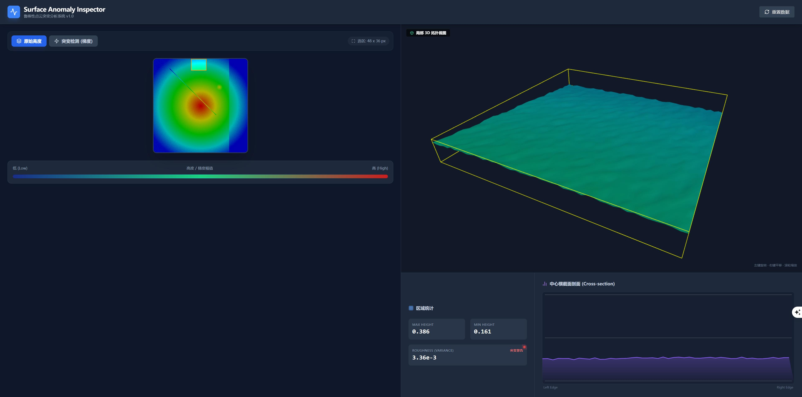

PHASE 01 // THE_SPARK
灵感闪现：
Gemini Chat Demo
一切始于对话。通过自然语言描述，Gemini 在几秒钟内生成了第一个能够跑通高度图渲染的单文件 HTML。
PURE VIBE EXPERIENCE
GEMINI 2.0 FLASH
STABLE_CONNECTION
帮我写一个基于 HTML5 Canvas 的表面高度图查看器，支持 CSV 导入。
<!DOCTYPE html>
<canvas id="view"></canvas>
<script>
const data = new Float32Array(...);
// Vibe logic here...
</script>
> DEVELOPMENT_TRACE_LOG
STAGE: 01 / 05
EXPLORATION
第1-2轮对话
PROMPT:
对于一张物体表面的点云高度信息图，用什么展示方式可以直观显示所框选位置的一些高度突变
